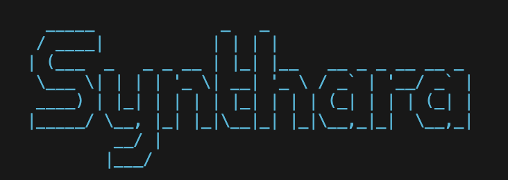

Advanced Retrieval-Augmented Generation System
Synthara RAG Transformer is an advanced Retrieval-Augmented Generation (RAG) system that combines sophisticated document retrieval with powerful language models to provide contextually rich, accurate responses across multiple knowledge domains.
The system uses a sophisticated multi-step process to retrieve relevant information from a diverse knowledge base and generate high-quality responses that are not just accurate, but contextually relevant to the user's query.
Semantic search across diverse datasets including machine learning concepts, science fiction, and cosmic content.
Bridges insights from machine learning concepts, science fiction movies, and cosmic and astronomical observations.
Creates visual representations of relationships between concepts to uncover hidden connections.
User-friendly web UI, CLI, and API server options for flexible integration.
Works with Hugging Face, OpenAI, and Anthropic models for optimal performance.
Docker, AWS, and GCP deployment utilities for scalable production environments.
all-MiniLM-L6-v2google/flan-t5-small, OpenAI GPT, Anthropic ClaudeThe RAG pipeline consists of the following steps:
Quickly retrieve and synthesize information from large document collections to accelerate research and discovery.
Generate contextually relevant content based on existing knowledge for blogs, articles, and documentation.
Visualize relationships between concepts to uncover new insights and connections in your data.
Enhance internal knowledge bases with semantic search and AI-powered responses for improved productivity.
Provide detailed explanations of complex topics with supporting context for enhanced learning experiences.
# 1. Clone Repository
git clone https://github.com/synthara-company/rag.git
cd rag
# 2. Create Virtual Environment
python3 -m venv venv
source venv/bin/activate # On macOS/Linux
# venv\Scripts\activate # On Windows
# 3. Install Dependencies
pip install -r requirements.txt
# 4. Set up API Keys
# Create a .env file in the project root with your API keys
# 5. Collect Datasets
python sci_fi_dataset_collector.pystreamlit run advanced_web_interface.pypython api_server.pypython knowledge_graph_visualizer.pycd deployment
docker-compose up -dExplore the project repository on GitHub: github.com/synthara-company/rag